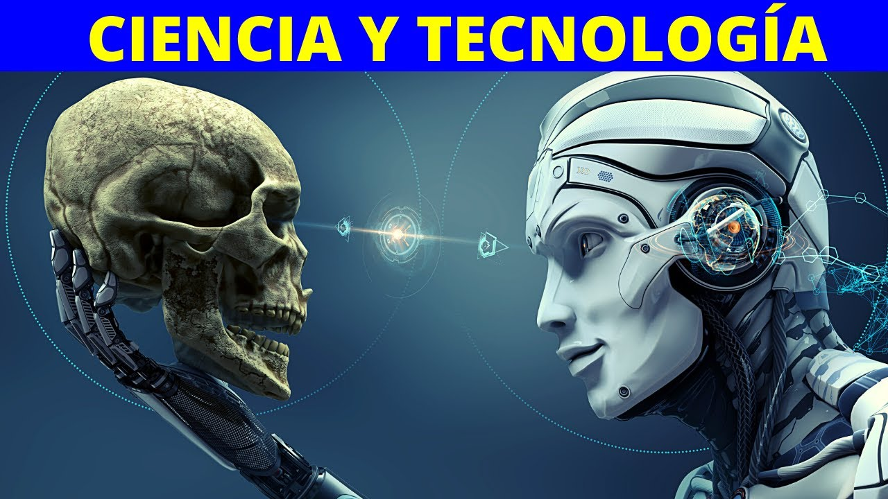

Tecnologia en la actualidad
¿Te interesa saber como es la tecnologia actualmente? Conoce mas de algunas tecnologias que destacan en la actualidad

Para empezar, ¿Que es la tecnologia?
La tecnología es el conjunto de conocimientos y técnicas que se aplican de manera ordenada para alcanzar un determinado objetivo o resolver un problema. La tecnología es una respuesta al deseo del hombre de transformar el medio y mejorar su calidad de vida. Sirve para agilizar y automatizar los procesos en cualquier contexto. Optimiza la productividad industrial al promover aplicaciones para el uso eficiente de recursos. Influencia la forma de hacer las cosas, abriendo espacios para otras profesiones o carreras.
Relacion entre ciencia y tecnologia

Con frecuencia se suele confundir el concepto de tecnología con el de ciencia. Por un lado, la ciencia es un conjunto ordenado de conocimientos que se obtienen a través de la observación y la experimentación.
Mientras la ciencia permite conocer determinados fenómenos, la tecnología se ocupa de combinarlos y modificarlos de manera eficiente para solucionar un problema o satisfacer una necesidad. Por lo cual, la tecnología depende enteramente de la existencia de la ciencia. Los avances científicos también implican nuevas oportunidades de desarrollo tecnológico.
Ejemplos de Tecnologia en la actualidad
Robótica: Utiliza herramientas y conocimientos de diversas disciplinas (ingeniería electrónica, ingeniería eléctrica, informática) para el diseño y fabricación de robots. Se espera que estos robots puedan realizar tareas automatizadas y trabajos que resultan rutinarios y tediosos para el ser humano o abaratar costos de producción en las industrias.
Criptomonedas: Son un tipo de divisa digital que utiliza una tecnología de registro distribuido (permite registrar y sincronizar transacciones entre múltiples usuarios en distintas ubicaciones).
Impresión 3D: Es un tipo de impresión por adición que crea de forma eficiente piezas únicas y geometrías complejas en una gran variedad de materiales. A través de la impresión 3D se crea un objeto tridimensional mediante la superposición de las capas de materiales, y se utiliza en gran cantidad de industrias para diferentes usos.
Inteligencia artificial: Implica la creación de máquinas que imitan las funciones cognitivas de los seres humanos. Esta tecnología es utilizada en varias disciplinas como economía, medicina, transporte, software de videojuegos, control de sistemas, reconocimiento de escritura, reconocimiento del habla y reconocimiento de patrones en los asistentes en línea.
Ventajas de la tecnologia
Desventajas de la tecnologia